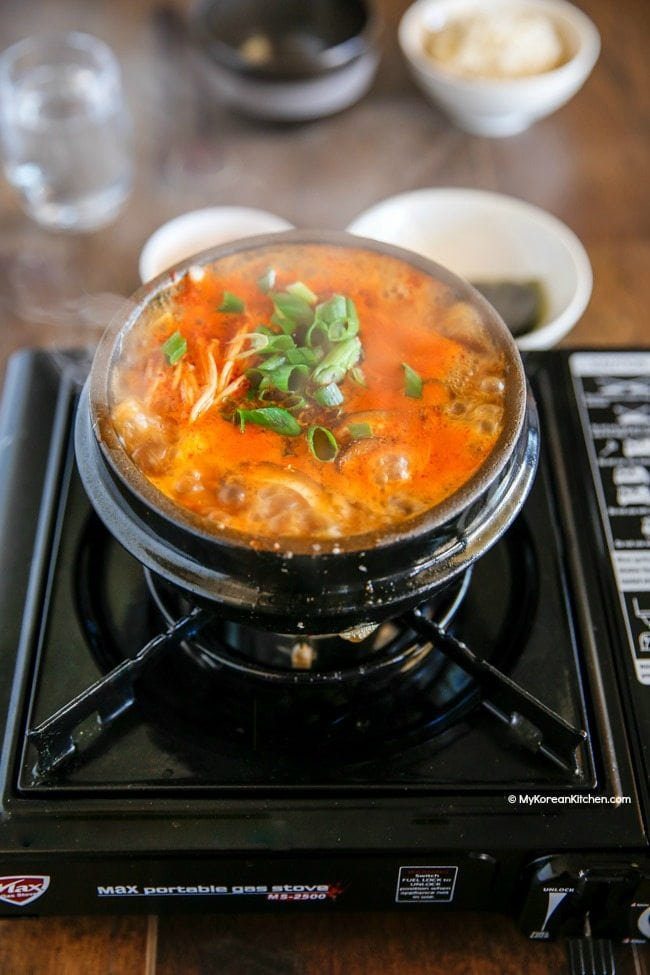

Korean
Sundupu Jjigae (Korean Soft Tofu Stew)

| 🧑🍳Prep Time: 30 minutes |
🧑🍳Cook Time: 10 minutes |
🧑🍳Servings: 2-3 |
Ingredients
- 350 g Korean soft tofu
- 110 g littleneck clams, cleaned
- 3-4 banana prawns, head, shells and guts removed
-
100 g enoki mushrooms, bottom 4-5 cm stem removed and rinsed briefly in
cold running water
- 2 shiitake mushrooms, cleaned, stem removed and thinly sliced
- 1 egg
- 1 stalk green onion, diagonally thinly sliced
Soup Base
- 1.5 cups Dried kelp and dried anchovy stock
- 1 Tbsp Korean chili oil or neutral cooking oil
- 2 Tbsp Korean chili powder
- 1 tsp minced garlic
- 1/2 Tbsp Korean fish sauce
- 1/2 Tbsp soy sauce
- fine sea salt, to taste
- A few sprinkles ground black pepper
- A dash sesame oil, about 1/2 tsp
Instructions
-
Start heating the pot on the stove over medium low heat and add the
chili oil, chili powder, and garlic. Stir them well for about 1 min.
Make sure not to burn the chili powder.
-
Add the clams and shrimps and stir quickly to coat them with the chili
sauce. Add the fish sauce and soy sauce then stir.
-
Add the dried kelp and anchovy stock and boil it on medium-high heat
until it starts to boil rapidly (2 to 3 mins).
-
Add the tofu, mushrooms, and egg and cook them for another 2 to 3 mins.
Season with salt, if required.
-
Top up with the green onion, black pepper and sesame oil. Serve hot with
Korean rice and side dishes (banchan).
Main Page | Western |
Dakgomtang